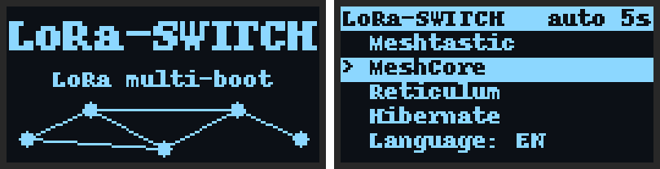

One Heltec V4. Meshtastic, MeshCore and Reticulum on the same board.
LoRa-SWITCH is a multi-boot package for the Heltec WiFi LoRa 32 V4. It installs the three firmwares side by side and adds a boot menu on the board's OLED screen. Pick a network with the PRG button and the board starts that firmware, exactly where you left it: every firmware keeps its own settings, keys, contacts and Bluetooth pairing.
No more erasing the board and reflashing each time you want to switch networks.

Device
Not for the V3 (8 MB flash is too small) or the V4-R8 (different pinout).
Bundle
- Meshtastic2.7.26.54e0d8d
- MeshCore companion (BLE)1.18.0
- Reticulum · RNode1.86
- LoRa-SWITCH menuv5
Latest stable release of each project, official builds.
Download
Download LoRa-SWITCH v5 (.zip, 18 MB)Windows 11 package: installer, firmwares and PDF guide.
SHA-256 5665eb21bb2d6b947c40283f2ab79df3339d3e5b977c8111a91e7b0befab6dd8
LoRa-SWITCH is free. If it saves you a few reflashes, you can buy me a coffee to keep the next versions coming.
How it works
A boot menu before every start
At power-on or after the RST button, the menu lists Meshtastic, MeshCore and Reticulum. Short press on PRG moves down, long press starts the firmware. Without a press, the last firmware starts after 5 seconds.
Each firmware in its own space
The 16 MB flash is split into three 3 MB firmware slots, each with its own settings storage and file system. A small bootloader shows each firmware only its own space, so official builds run unmodified.
One Bluetooth identity per firmware
Your phone sees Meshtastic, MeshCore and the RNode as three different devices, each with its own pairing. They never steal each other's connection.
Reboots stay where they are
When a firmware restarts by itself (new settings, wake-up from sleep), it comes straight back, without the menu.
Hibernate
Turns off the screen, the LoRa radio, GPS and LED, then puts the chip in deep sleep. Press PRG to wake the board up into the menu. The V4 has no power switch, so for long storage unplug the battery.
English, French, Spanish
The Language entry switches the start screen and menu between English, Français and Español. The choice is remembered.
Install on Windows 11
- Download the package and extract it with Extract all. Do not run anything from inside the zip.
- Plug the Heltec V4 in with a USB-C cable that carries data.
- Double-click
INSTALLER.bat. If Windows shows “Windows protected your PC”, choose More info then Run anyway. - Press Enter to use the detected COM port, then type O to confirm. The board is erased and written in 2 to 4 minutes. No Python needed: the Espressif flashing tool is included.
- Press RST on the board. The LoRa-SWITCH screen appears, then the menu.
Already running an earlier LoRa-SWITCH? MISE_A_JOUR_LORA-SWITCH.bat updates the menu and adds Reticulum without erasing Meshtastic or MeshCore. The full step-by-step guide is included as a PDF (French).
Limitations of the current version
Firmwares are bundled, not updated one by one
This version ships the latest stable release of each of the three projects, packaged together as one image. Updating Meshtastic, MeshCore or the RNode independently from this page is not possible yet: to move to newer firmwares, install the next LoRa-SWITCH package. Per-firmware updates are planned for an upcoming release.
| Topic | What to know |
|---|---|
| Web flashers | Do not use the Meshtastic or MeshCore web flashers, or rnodeconf --autoinstall, on a LoRa-SWITCH board. They rewrite the whole chip and remove the menu. Reinstall the package to get it back. |
| Over-the-air updates | Built-in OTA updates (Bluetooth or WiFi) are disabled on purpose, so one firmware can never overwrite another. |
| MeshCore on iPhone | Right after the very first pairing, the app may report “Failed to fetch device info”. Tap Reconnect: the next connections work directly. |
| Reticulum | The RNode is a radio modem driven by Reticulum software: over USB from a computer (rnsd, NomadNet, MeshChat) or over Bluetooth from Sideband on Android. It comes pre-provisioned for the Heltec V4 (850–950 MHz). |
| Platform | The one-click installer is for Windows 11. On macOS and Linux, the package includes a Python flashing script. |
| Status | Beta. Meshtastic and MeshCore have been tested on a Heltec V4 with an iPhone; Reticulum and Hibernate are new in v5. Please report what works on your setup. |
Roadmap
- doneBoot menu, separate storage and Bluetooth identity for each firmware
- doneReticulum (RNode), Hibernate, English / French / Spanish menu
- nextUpdate one firmware at a time from this page, without touching the others
- nextInstaller for macOS and Linux